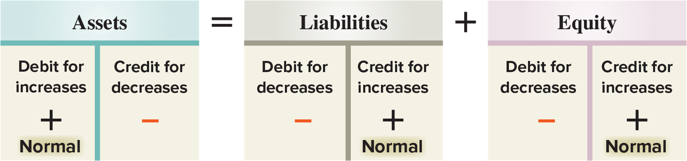
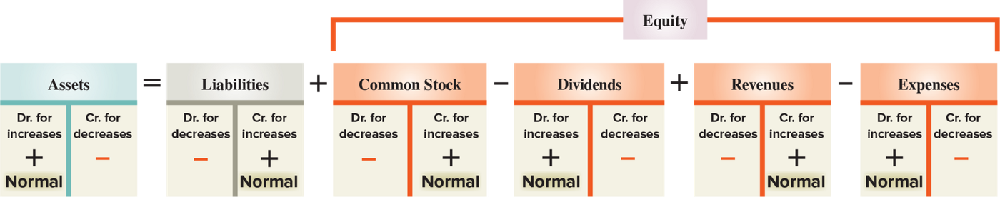

Chapter 2 — Double-Entry Accounting
ACCT 203 · Principles of Financial Accounting · Chapter 2: Accounting for Business Transactions · Section 2 of 4:
Double-Entry Accounting
Objective C2: Define debits and credits and explain double-entry accounting.
This section is “left and right — and every transaction must balance”
In the previous lesson you learned that every asset, liability, and equity item has its own account, and that all the accounts are collected in the ledger. Now the question is: how do we write increases and decreases inside an account? The answer is two words that will follow you through the whole course: debit (مدين) and credit (دائن).
Focus from now on three ideas: (1) debit = left and credit = right, that is all — not increase and not decrease. (2) Every transaction touches at least two accounts, and debits equal credits. (3) Every type of account has a side where it increases, and that same side is its normal balance — remember the word DrEAD. If you master this lesson, lesson 3 (recording transactions in the journal) becomes just practice. The exam questions here are usually: “What is the normal balance of this account?” and “Compute the balance of this T-account.”
A T-account is a drawing shaped like the letter T that represents one ledger account: the left is debit (Dr) and the right is credit (Cr). The balance = the difference between the two sides.
A T-account represents a ledger account, and we use it to see the effects of transactions on that account. Its name comes from its shape — like the letter T. Its layout is in Exhibit 2.5:
| Account Title | |
|---|---|
| (Left side) Debit | (Right side) Credit |
This is Exhibit 2.5 in the book — the book shows it as a simple text diagram, so it is written here as a table. Above the horizontal line is the account name (Account Title). Under it is a vertical line in the middle: the left says (Left side) Debit and the right says (Right side) Credit. What they ask: “Which side is called debit?” — the left, always, in every account.
| Term | What it means |
|---|---|
| Debit side — Dr الجهة المدينة |
The left side of the account. |
| Credit side — Cr الجهة الدائنة |
The right side of the account. |
| To debit an account تجعل الحساب مدين |
You enter an amount on the left side of the account. |
| To credit an account تجعل الحساب دائن |
You enter an amount on the right side of the account. |
⚠ The word debit or credit by itself does not mean increase or decrease. Is a debit an increase or a decrease? It depends on the type of account — for example, a debit increases Cash (an asset) but decreases accounts payable (a liability). The full rule for each type is in the third concept.
Note from the book (Point): debit and credit are just accounting directions for left and right.
The account balance = the difference between total debits and total credits for the account, including any beginning balance. It has three cases:
| Case | When it happens |
|---|---|
| Debit balance رصيد مدين |
Total debits exceed total credits (debits are larger). |
| Credit balance رصيد دائن |
Total credits are larger than total debits. |
| Zero balance رصيد صفر |
Total debits equal total credits. |
How do you compute it step by step on the book's real example? In the fifth concept (Exhibit 2.8).
A T-account represents a ledger account and is used to show the effects of transactions. Its name comes from its shape like the letter T.
The left side of an account is called the debit side, or Dr. The right side is called the credit side, or Cr. To enter amounts on the left side of an account is to debit the account. To enter amounts on the right side is to credit the account. The term debit or credit, by itself, does not mean increase or decrease. Whether a debit or a credit is an increase or decrease depends on the account.
The difference between total debits and total credits for an account, including any beginning balance, is the account balance. When total debits exceed total credits, the account has a debit balance. It has a credit balance when total credits exceed total debits. When total debits equal total credits, the account has a zero balance.
- Debit is not “increase” and credit is not “decrease”. Any choice that says a debit always increases an account is wrong. The book's sentence: depends on the account.
- Be careful if you read an Arabic accounting book: there the debit often comes on the right, because Arabic is written from right to left. In your book and your exam (English): Debit = Left and Credit = Right. Do not mix them up.
- The balance is computed with the beginning balance (including any beginning balance) — if the question gives you an opening balance and you forget it, you will get a wrong answer that is waiting for you in the choices.
- There are three cases: debit, credit, zero. “Zero balance” means the two sides are equal — not that the account has no transactions.
Double-entry accounting = every transaction touches at least two accounts, with a debit and a credit, and total debits = total credits — so the accounting equation stays in balance.
Double-entry accounting demands that the accounting equation stay in balance, and this means that each transaction must follow two rules:
- At least two accounts are involved, with at least one debit and one credit.
- The total amount debited = the total amount credited (total amount debited must equal total amount credited).
What follows from this? Two things:
- Total debits = total credits for all entries together.
- The total of the debit account balances in the ledger = the total of the credit account balances — and this is the idea behind the trial balance in lesson 4.
And the debit and credit system follows the accounting equation — see Exhibit 2.6:

This is Exhibit 2.6 in the book. The equation Assets = Liabilities + Equity is drawn as three T-accounts. Assets (the blue title): the left is Debit for increases with a + and the word Normal under it, and the right is Credit for decreases with a −. Liabilities (grey) and Equity (pink) are the opposite — the left is Debit for decreases (−), and the right is Credit for increases (+) with Normal under it. How to read it: each part increases on the side where it sits in the equation — assets are left of the equals sign, so they increase on the left; liabilities and equity are right of the equals sign, so they increase on the right. And the word Normal is always under the + sign. What they ask: “Which side increases liabilities?” or “What is the normal balance of equity?” — the answer is credit for both.
Any net increase or decrease on one side of the equation must have an equal net effect on the other side. The book's example: a net increase in assets must come with an equal net increase on the liabilities and equity side.
But some transactions touch only one side — like a company that acquires land (an asset) and has to give up cash (an asset) for it. One asset goes up and another asset goes down by the same amount, so the net effect on this side = zero, and the equation stays in balance.
Note from the book (Point): assets are on the left of the equation, so they increase on the left (debit). Liabilities and equity are on the right of the equation, so they increase on the right (credit).
This part of the book explains with words only, and the full entries come in lesson 3. But take the first two transactions from the Cash account in Exhibit 2.8 (the fifth concept) and see the two rules at work. An entry is written in the journal: the debit on the first line, and the credit under it, pushed a little to the right. The date is in the first column: transaction (1) happened on Dec. 1 and transaction (2) on Dec. 2 — the same numbers that are in brackets in the Cash account.
| Date | Account titles and explanation | Debit | Credit |
|---|---|---|---|
| Dec. 1 | Cash | 30,000 | |
| Common Stock | 30,000 | ||
| Receive investment by owner. |
So: Cash (an asset) went up → debit, and Common Stock (equity) went up → credit. Two accounts, one debit and one credit, and 30,000 = 30,000. Assets went up 30,000 and equity went up 30,000 — a net increase on one side = an equal net increase on the other side.
| Date | Account titles and explanation | Debit | Credit |
|---|---|---|---|
| Dec. 2 | Supplies | 2,500 | |
| Cash | 2,500 | ||
| Purchase supplies for cash. |
So: Supplies (an asset) went up → debit, and Cash (an asset) went down → credit. The transaction touched assets only: +2,500 and −2,500, so the net effect on this side = zero — exactly the same idea as the land-for-cash example.
Double-entry accounting demands the accounting equation remain in balance, which means that for each transaction:
- At least two accounts are involved, with at least one debit and one credit.
- Total amount debited must equal total amount credited.
This means total debits must equal total credits for all entries, and total debit account balances in the ledger must equal total credit account balances. The system for recording debits and credits follows the accounting equation—see Exhibit 2.6.
Net increases or decreases on one side have equal net effects on the other side. Assets are on the left-hand side of the equation and thus increase on the left. Liabilities and equity are on the right-hand side of the equation and thus increase on the right.
- The rule says “at least two accounts” (at least two) — not “exactly two accounts”. An entry with three accounts is normal (you will see it in lesson 3).
- What must be equal is the amounts (total debits = total credits), not the number of debit and credit accounts.
- Buying land with cash (or supplies with cash, like entry 2) touches assets only, and the equation stays in balance because the net effect is zero. A choice that says “every transaction must change both sides of the equation” is wrong.
- “The entry is balanced” (its debits = its credits) is one thing, and “the account balance is zero” is another thing. Do not mix them up.
Equity increases from common stock and revenues (so their increases are credits), and decreases from dividends and expenses (so their increases are debits).
Remember from Chapter 1: equity increases from revenues and owner investments (stock issuances), and decreases from expenses and dividends. When we break equity into its four component accounts by expanding the equation, and put debits and credits on each part, we get Exhibit 2.7:

This is Exhibit 2.7 in the book. It is Exhibit 2.6 again, but Equity is broken, under the orange bracket, into four T-accounts: Common Stock − Dividends + Revenues − Expenses. How to read it: Common Stock and Revenues (with a + in front of them) say Dr. for decreases on the left and Cr. for increases on the right, with Normal under the right — exactly like equity. But Dividends and Expenses (with a − in front of them) are the opposite: the left says Dr. for increases with Normal under it, and the right says Cr. for decreases — so they work like Assets. What they ask: “Which two equity accounts increase with a debit?” → Dividends and Expenses.
And the book's sentence that sums up the picture: increases (credits) to common stock and revenues raise equity; increases (debits) to dividends and expenses lower equity.
Why do dividends and expenses increase with a debit? Because when one of them increases, equity decreases — and the decrease side of equity is debit. So their increase and the decrease of equity are on the same side. And every account's normal balance is its increase side (the next concept).
| Account type | Increases with | Decreases with | Normal balance | What does its increase do to equity? |
|---|---|---|---|---|
| Assets الأصول |
Debit | Credit | Debit | — (not part of it) |
| Liabilities الالتزامات |
Credit | Debit | Credit | — (not part of it) |
| Equity as a whole (its four parts are below) حقوق الملكية |
Credit | Debit | Credit | — |
| Common Stock الأسهم العادية |
Credit | Debit | Credit | raises it ↑ |
| Dividends التوزيعات |
Debit | Credit | Debit | lowers it ↓ |
| Revenues الإيرادات |
Credit | Debit | Credit | raises it ↑ |
| Expenses المصروفات |
Debit | Credit | Debit | lowers it ↓ |
Notice the pattern: three increase with a debit (Assets, Dividends, Expenses), and all the others increase with a credit. And the decrease side is always the opposite of the increase side.
Equity increases from revenues and owner investments (stock issuances), and it decreases from expenses and dividends. We see this by expanding the accounting equation to include debits and credits in double-entry form, as shown in Exhibit 2.7.
Increases (credits) to common stock and revenues increase equity; increases (debits) to dividends and expenses decrease equity.
- Dividends increase with a debit — not because they are an expense. Dividends are not an expense (from Chapter 1 and lesson 1), but they follow the same side as expenses because both of them decrease equity.
- An increase in Expenses = debit, even though an expense “decreases” equity. The choice that says “an expense increases with a credit because it lowers profit” mixes up its effect on equity with its own increase side.
- The same idea with another name: your book uses a corporation: Common Stock, Dividends, and Retained Earnings. Some class handouts use a sole proprietorship: Owner's Capital (رأس مال المالك) and Owner's Withdrawals or Drawing (مسحوبات المالك). It is the same idea in a different business form, with the same debit and credit rules: Capital works like Common Stock (it increases with a credit and has a normal credit balance), and Withdrawals work like Dividends (they increase with a debit and have a normal debit balance).
- The signs in the equation: Common Stock +, Dividends −, Revenues +, Expenses −. The ones with a − in front increase with a debit.
Normal balance = the side where increases are recorded. Memorize it with one word: DrEAD — debit for Expenses, Assets, and Dividends, and credit for the rest.
The book says: the normal balance of any account = the side where increases are recorded. So you do not need to memorize anything new — if you know where an account increases, you know its normal balance. And this matches their place in the equation:
- The left (debit) is the normal balance side for assets — because assets are on the left of the equation.
- The right (credit) is the normal balance side for liabilities and equity — because they are on the right.
The book's mnemonic (Point): DrEAD = debit (Dr) is the normal balance side for Expense, Asset, and Dividend accounts — and credit for the others (liabilities, common stock, revenues).
The task: identify the normal balance (Dr or Cr) for each account. Cover the last column and try before you look at the solution:
| # | Account | Its type | Normal balance |
|---|---|---|---|
| 1 | Prepaid Rent | asset (a prepaid expense) | Dr |
| 2 | Common Stock | equity | Cr |
| 3 | Note Receivable | asset | Dr |
| 4 | Accounts Payable | liability | Cr |
| 5 | Accounts Receivable | asset | Dr |
| 6 | Equipment | asset | Dr |
| 7 | Interest Payable | liability (owed) | Cr |
| 8 | Unearned Revenue | liability — not a revenue | Cr |
| 9 | Land | asset | Dr |
| 10 | Prepaid Insurance | asset (a prepaid expense) | Dr |
| 11 | Dividends | dividends (they decrease equity) | Dr |
| 12 | Utilities Expense | expense | Dr |
The book's solution: 1. Dr. 2. Cr. 3. Dr. 4. Cr. 5. Dr. 6. Dr. 7. Cr. 8. Cr. 9. Dr. 10. Dr. 11. Dr. 12. Dr. — so 8 debit and 4 credit. The only credits are Common Stock and the accounts with payable or unearned in their names (from lesson 1: these two words almost always mean a liability).
The left side is the normal balance side for assets; the right side is the normal balance side for liabilities and equity. This matches their layout in the accounting equation, where assets are on the left side and liabilities and equity are on the right.
The normal balance of each account is the side where increases are recorded.
DrEAD means debit (Dr) is the normal balance side for Expense, Asset, and Dividend accounts; credit the others.
- The E in DrEAD = Expense, not Equity. Equity has a normal credit balance.
- Dividends are part of equity, but their normal balance is debit — the most famous mistake in this section.
- If the question asks “what decreases the normal balance?” (like QS 2-5), the answer is the opposite side: a liability has a credit balance, so it decreases with a debit; an asset has a debit balance, so it decreases with a credit.
- Prepaid Rent and Prepaid Insurance have the words rent and insurance in them, but they are assets, not expenses. And Unearned Revenue has the word revenue in it, but it is a liability. Know the type first, then the side.
Balance = the total of the larger side − the total of the smaller side, and it is written on the side with the larger amount. The book's example: FastForward's cash = 36,100 − 31,300 = 4,800 debit.
The book goes back to FastForward (the company whose transactions you analyzed in Chapter 1) and puts its first 11 transactions (from Exhibit 1.9) into a Cash T-account. Cash is an asset, so increases are debits (left) and decreases are credits (right). Transactions with no cash in them at all (like buying supplies on credit) do not appear in this account.
![Exhibit 2.8 — T-account for Cash: the debit side lists receive investment by owner for stock 30,000, consulting services revenue earned 4,200 and collection of account receivable 1,900, bracketed as 36,100; the credit side lists purchase of supplies 2,500, purchase of equipment 26,000, payment of rent 1,000, payment of salary 700, payment of account payable 900 and payment of cash dividend 200, bracketed as 31,300; below the line the balance of 4,800 sits on the debit side, with an arrow from a box reading 36,100 minus 31,300](../img/acct203/exhibit-2-8.png)
This is Exhibit 2.8 in the book. The left (debit = increases in cash): three amounts — the owner's investment for stock 30,000, consulting services revenue 4,200, collection of an account receivable 1,900 — and the bracket adds them up in the box with the blue number 36,100. The right (credit = decreases in cash): six amounts — purchase of supplies 2,500, purchase of equipment 26,000, payment of rent 1,000, payment of salary 700, payment of an account payable 900, payment of a cash dividend 200 — and their total is in the box 31,300. Below the line: Balance 4,800 in red on the debit side, with an arrow coming from the box 36,100 − 31,300. What they ask: they give you a T-account (like QS 2-7) and ask: what is the ending balance? And on which side?
And the same account as a T-account, with each transaction's number from Chapter 1 in brackets:
| Cash | |
|---|---|
| Debit | Credit |
| (1) 30,000 | (2) 2,500 |
| (5) 4,200 | (3) 26,000 |
| (9) 1,900 | (6) 1,000 |
| (7) 700 | |
| (10) 900 | |
| (11) 200 | |
| Total 36,100 | Total 31,300 |
| Balance 4,800 | |
Debits: 30,000 + 4,200 + 1,900 = 36,100. Credits: 2,500 + 26,000 + 1,000 + 700 + 900 + 200 = 31,300. Balance: 36,100 − 31,300 = 4,800 — written on the debit side because it is the larger one.
The three steps the book applied:
- Add up the debit side: the increases = 36,100.
- Add up the credit side: the decreases = 31,300.
- Subtract the smaller from the larger: debits are bigger by 4,800, which results in an ending debit balance of 4,800.
And notice that the result is logical: Cash is an asset, and an asset has a normal debit balance (DrEAD). Note from the book (Point): the ending balance is on the side with the larger amount.
Remember the first rule: at least two accounts in every transaction. So every amount in the Cash account above has the same amount in another account, on the opposite side. Here is the second leg of each line (the full entries are in lesson 3) — and try to apply the rules table to it:
| # | The transaction (from the exhibit) | In Cash | The second leg | Why it is on that side |
|---|---|---|---|---|
| 1 | Receive investment by owner for stock | Dr 30,000 | Common Stock Cr 30,000 | equity went up → credit |
| 5 | Consulting services revenue earned | Dr 4,200 | Consulting Revenue Cr 4,200 | a revenue went up → credit |
| 9 | Collection of account receivable | Dr 1,900 | Accounts Receivable Cr 1,900 | an asset went down → credit |
| 2 | Purchase of supplies | Cr 2,500 | Supplies Dr 2,500 | an asset went up → debit |
| 3 | Purchase of equipment | Cr 26,000 | Equipment Dr 26,000 | an asset went up → debit |
| 6 | Payment of rent | Cr 1,000 | Rent Expense Dr 1,000 | an expense went up → debit |
| 7 | Payment of salary | Cr 700 | Salaries Expense Dr 700 | an expense went up → debit |
| 10 | Payment of account payable | Cr 900 | Accounts Payable Dr 900 | a liability went down → debit |
| 11 | Payment of cash dividend | Cr 200 | Dividends Dr 200 | dividends went up → debit (DrEAD) |
Each line: debit = credit. And the second legs of the credit lines add up to 2,500 + 26,000 + 1,000 + 700 + 900 + 200 = 31,300 — the same as the credit side total in Cash.
The T-account for FastForward’s Cash account, reflecting its first 11 transactions (from Exhibit 1.9), is shown in Exhibit 2.8. The total increases (debits) in its Cash account are $36,100, and the total decreases (credits) are $31,300. Total debits exceed total credits by $4,800, resulting in its ending debit balance of $4,800.
The ending balance is on the side with the larger dollar amount.
- The balance is not the sum of the two sides: 36,100 + 31,300 = 67,400 is wrong. The balance = the difference.
- The right number on the wrong side = a wrong answer. The balance here is 4,800 debit, and the choice “4,800 credit” is usually there to catch you.
- If there is a beginning balance, add it to its side before you subtract. FastForward started in December from zero, so there is no opening balance in this example.
- Not every company transaction goes into the Cash account: transaction (4), buying supplies on credit 7,100 (debit Supplies, credit Accounts Payable), and transaction (8), services on credit 1,900 (debit Accounts Receivable), have no cash, so they do not appear in the account. That is why the account has 9 amounts, not 11.
Test yourself
The questions are in English because the exam is in English. Answer before you open the solution. If you miss question 1, go back to the fifth concept; if you miss 2, go back to DrEAD in the fourth concept; if you miss 4, go back to the rules table in the third concept; and if you miss 3 or 5, go back to the two rules and the two examples in the second concept.
- $3,400 credit
- $3,400 debit
- $1,400 credit
- $11,600 credit
Answer
A. Accounts Payable is a liability, so it increases with a credit. Credits: 2,000 + 5,500 = 7,500, and debits 4,100. The balance is 7,500 − 4,100 = 3,400 on the larger side = credit. The trap in B: the number is right but the side is wrong. C is a trap: it omits the beginning balance (5,500 − 4,100 = 1,400) — and the book says including any beginning balance. And D added all the numbers (2,000 + 5,500 + 4,100) instead of subtracting.
- Unearned Revenue
- Common Stock
- Dividends
- Interest Payable
Answer
C. DrEAD: Expense, Asset, and Dividend accounts have a normal debit balance. The trap in B: Common Stock is equity, so its balance is credit — and anyone who thinks “Dividends are equity, so credit” falls here. A is a trap: it has the word revenue, but it is a liability (credit). And D: the word payable = liability = credit.
- Debit Land $40,000 and credit Cash $40,000; total assets do not change.
- Debit Cash $40,000 and credit Land $40,000; total assets do not change.
- Debit Land $40,000 and credit Cash $40,000; total assets increase by $40,000.
- Debit Land $40,000 and credit Common Stock $40,000; equity increases by $40,000.
Answer
A. Land is an asset that went up → debit, and Cash is an asset that went down → credit. This is exactly the book's example of a transaction that touches only one side of the equation: an asset for an asset, so the net effect on assets = zero. The trap in B: it swaps the sides (an asset increases with a debit, not a credit). C: the sides are right, but it forgot that cash went down by the same amount. And D: no owner invested anything — the company gave up its own cash for the land.
- Common Stock and Revenues
- Dividends and Expenses
- Liabilities and Common Stock
- Revenues and Expenses
Answer
B. In Exhibit 2.7 the two accounts with a − sign in front of them, inside the Equity bracket, say Dr. for increases with Normal on the left. The trap in A: these are the ones that raise equity, so they increase with a credit (Cr. for increases). D is a trap: it confuses a revenue (credit) with an expense (debit) — both of them touch profit, but their sides are opposite. And C: both of them increase with a credit.
- Debit Cash $650; credit Salaries Expense $650
- Debit Salaries Expense $650; debit Cash $650
- Debit Salaries Expense $650; credit Cash $560
- Debit Salaries Expense $650; credit Cash $650
Answer
D. The expense went up → debit, and Cash (an asset) went down → credit, and the two amounts are equal (650 = 650). The trap in A: the sides are reversed. B breaks the first rule: there must be at least one debit and one credit, and here there are two debits and no credit. And C breaks the second rule: 650 ≠ 560, and the debit must equal the credit.
Key terms from this section
| Term | What it means | Watch out for |
|---|---|---|
| T-account | A drawing that represents one ledger account | its name comes from its shape |
| Debit (Dr) / debit side | The left side of an account | = left — not “increase” |
| Credit (Cr) / credit side | The right side of an account | = right — not “decrease” |
| To debit / to credit an account | To enter an amount on the left / right side | increase or decrease? it depends on the account |
| Account balance | The difference between total debits and total credits | with the beginning balance |
| Debit balance | Total debits are larger | debits exceed credits |
| Credit balance | Total credits are larger | credits exceed debits |
| Zero balance | Total debits = total credits | not “no transactions” |
| Double-entry accounting | Every transaction keeps the equation in balance | two rules: at least two accounts (a debit and a credit) · amounts debited = amounts credited |
| Normal balance | The side where increases are recorded | assets left; liabilities and equity right |
| DrEAD | The memory word for normal debit balances | Expense · Asset · Dividend = Dr; the E is not Equity |
| Ending balance | The balance left at the end | on the side with the larger amount — not the sum of both sides |
| Owner's Capital / Owner's Withdrawals (Drawing) | The sole proprietorship names | same rules as Common Stock / Dividends |
| Exhibit 2.6 — Debits and Credits in the Accounting Equation | The equation as three T-accounts | assets increase left; liabilities and equity increase right |
| Exhibit 2.7 — Debit and Credit Effects for Component Accounts | Equity broken into four T-accounts | Dividends and Expenses = Dr. for increases |
| Exhibit 2.8 — Computing the Balance for a T-Account | FastForward's Cash T-account | 36,100 − 31,300 = 4,800 debit |
Vocabulary from this lesson
These are the general English words on this page, not the accounting terms. Learn them and the textbook gets much easier to read.
| Word | Part of speech | العربية | Example sentence from this lesson |
|---|---|---|---|
| acquire | verb | يحصل على / يشترييعني تاخذ شي وتصير تملكه، غالباً تشتريه | But some transactions touch only one side — like a company that acquires land (an asset) and has to give up cash (an asset) for it. |
| bracket | noun | قوسيعني الخط اللي يلم كذا شي مع بعض ويقول هذولا مجموعة وحدة | It is Exhibit 2.6 again, but Equity is broken, under the orange bracket, into four T-accounts: Common Stock − Dividends + Revenues − Expenses. |
| by itself | phrase | لحاله / بمفردهيعني الكلمة بروحها بدون ما تعرف الحساب، ما تكفي تعطيك المعنى | The term debit or credit, by itself, does not mean increase or decrease. |
| component | noun | جزء / مكوّنيعني قطعة من شي أكبر، زي حقوق الملكية تنفك لأربع قطع | When we break equity into its four component accounts by expanding the equation, and put debits and credits on each part, we get Exhibit 2.7: |
| confuse | verb | يخلط بينيعني تحسب الشي هو الشي الثاني وتلخبط بينهم | D is a trap: it confuses a revenue (credit) with an expense (debit) — both of them touch profit, but their sides are opposite. |
| demand | verb | يتطلّب / يفرضيعني يقول لازم يصير كذا، ما فيه خيار ثاني | Double-entry accounting demands that the accounting equation stay in balance, and this means that each transaction must follow two rules: |
| depend on | phrasal verb | يعتمد علىيعني الجواب يتغيّر حسب الشي هذا، ما له جواب ثابت | Whether a debit or a credit is an increase or decrease depends on the account. |
| direction | noun | اتجاهيعني جهة، وين تروح: يمين ولا يسار | Note from the book (Point): debit and credit are just accounting directions for left and right. |
| exceed | verb | يتجاوز / يزيد علىيعني يكون أكبر منه ويعدّيه | When total debits exceed total credits, the account has a debit balance. |
| expand | verb | يوسّعيعني تفتح الشي وتكبّره عشان تشوف تفاصيله | We see this by expanding the accounting equation to include debits and credits in double-entry form, as shown in Exhibit 2.7. |
| give up | phrasal verb | يتخلّى عنيعني تعطي الشي وتفقده مقابل شي ثاني | And D: no owner invested anything — the company gave up its own cash for the land. |
| horizontal | adjective | أفقييعني الخط النايم من اليسار لليمين، زي خط الأرض | Above the horizontal line is the account name (Account Title). |
| identify | verb | يحدّد / يتعرّف علىيعني تقول هذا وش هو بالضبط | The task: identify the normal balance (Dr or Cr) for each account. |
| involve | verb | يشمل / يدخل فيهيعني يكون له دخل في الشي ويتأثر فيه | At least two accounts are involved, with at least one debit and one credit. |
| layout | noun | الشكل / الترتيبيعني كيف الأشياء مرتبة ومحطوطة في الصفحة | This matches their layout in the accounting equation, where assets are on the left side and liabilities and equity are on the right. |
| logical | adjective | منطقييعني الشي يدخل العقل وله سبب واضح | And notice that the result is logical: Cash is an asset, and an asset has a normal debit balance (DrEAD). |
| match | verb | يطابق / يتماشى معيعني يجي زيّه بالضبط ويركب عليه | And this matches their place in the equation: |
| mnemonic | noun | وسيلة للحفظيعني كلمة أو حيلة صغيرة تساعدك تتذكر قاعدة | The book's mnemonic (Point): DrEAD = debit (Dr) is the normal balance side for Expense, Asset, and Dividend accounts — and credit for the others (liabilities, common stock, revenues). |
| net | adjective | صافييعني اللي يبقى بالأخير بعد ما تجمع الزايد وتطرح الناقص | Net increases or decreases on one side have equal net effects on the other side. |
| omit | verb | يحذف / يُسقطيعني تنسى الشي أو تتركه وما تحطه في الحساب | C is a trap: it omits the beginning balance (5,500 − 4,100 = 1,400) — and the book says including any beginning balance. |
| opposite | noun | عكس / معاكسيعني الجهة الثانية تماماً، زي اليمين واليسار | And the decrease side is always the opposite of the increase side. |
| pattern | noun | نمطيعني شي يتكرر بنفس الطريقة، تقدر تحفظه مرة وحدة | Notice the pattern: three increase with a debit (Assets, Dividends, Expenses), and all the others increase with a credit. |
| represent | verb | يمثّليعني يقوم مقام الشي ويدل عليه | A T-account represents a ledger account and is used to show the effects of transactions. |
| result in | phrasal verb | يؤدي إلى / ينتج عنهيعني آخرته يطلع لك هذا الشي | Total debits exceed total credits by $4,800, resulting in its ending debit balance of $4,800. |
| subtract | verb | يطرحيعني تنقّص رقم من رقم، زي ١٠ ناقص ٣ | Subtract the smaller from the larger: debits are bigger by 4,800, which results in an ending debit balance of 4,800. |
| swap | verb | يبدّليعني تحط هذا مكان هذا، تقلب أماكنهم | The trap in B: it swaps the sides (an asset increases with a debit, not a credit). |
| vertical | adjective | عمودييعني الخط الواقف من فوق لتحت | Under it is a vertical line in the middle: the left says (Left side) Debit and the right says (Right side) Credit. |
Built from the text of the textbook Financial Accounting Fundamentals, 8th edition
(Wild, McGraw Hill) — Chapter 2: Accounting for Business Transactions, part Double-Entry Accounting
(Debits and Credits and Double-Entry System), objective C2 (pages 49–50), with
Need-To-Know 2-2 and the chapter summary (Summary: Cheat Sheet).
Summarized only: everything above comes from the main text. Exhibit 2.5 is a
text diagram in the book, not a picture, so it is written here as a table. The
cartoon (a worker thinking “Total debits equal total credits for each
entry.”) is not included because it says the same thing as the second rule. The transaction numbers in brackets in
the Cash account come from Exhibit 1.9 in Chapter 1; the two entries (1) and (2) and the “second leg” table are
taken from the entries for the same transactions in the part Analyzing and Processing Transactions and the
Cheat Sheet (fully explained in lesson 3). The Do More
exercises (QS 2-4 to QS 2-7 and E 2-5) are not
solved here.